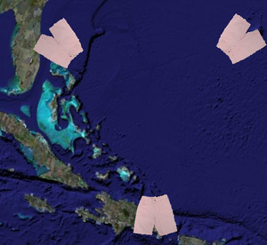

Triángulo de las Bermudas
 De: La Frikipedia, la enciclopedia extremadamente seria.
De: La Frikipedia, la enciclopedia extremadamente seria.

|
ATENCIÓN
Este artículo es un truño, es sólo un esbozo de un artículo o es demasiado corto o el que lo ha escrito se cree que esto es un vil diccionario. Su autor puede estar bajo los efectos del alcohol o ser un inútil. Quizá haya pistas en la discusión. ¡Mejora la Frikipedia ampliando y mejorando el artículo!
|
 Unica foto bien definida del triangulo de las bermudas
El triangulo de las bermudas (Tambien conocido como el vater de Dios), es una cosa parecida a el Triángulo de Ciudad Jardín® pero en el atlantico, que fue creado el el dia miércoles del Genesis cuando Dios havia cagado una mierda tan grande que creo un bujero negro (era lo más parecido a un vater que tenía a mano) y desde entonces en ese lugar toda la mierda que pasa por ahi, desaparece y aparece por otakulandia o por transilvania.
Casos que tienen que ver
- El Año 1300 A.C un tigre llamado shimajiro (El que enseña a cagar a los niños japos) cayo por el bujero y fue trasladado a otakulandia en donde fundo la Ciberciudad.
- El Año 1292 D.C El bisabuelo de colón que tenia el mismo proposito de este, fue tragado tambien pero este llego a transilvania y se convirtio en el Conde dracula y aparicio la peste negra.
- El año 1866 D.C Unos tios que llevaban drogas por avion, tambien desaparecieron y el avion fue encontrado con prostitutas en la isla del Krakatoa
- El Año 1960 D.C unos gigantes se tiraron en caidas libres hacia el triangulo pero murieron ahogados y quedaron sus bermudas (De ahi viene su nombre)
- El año 1986 D.C cuando Michael Jackson estaba de vacaciones por ahi (era negro entonces), fue tragado y fue rescatado en transilvania, pero blanco.
- El año pasado se tiraron Wally con Carmen San Diego al bujero y desde ahi no se han viso mas. (Por lo menos yo)
¿Sabias que...
- ...el titanic se hundio por esto?
- ...Tú tuviste la culpa de el origen de este?
- ...El Krakatoa exploto por las prostitutas?
- ...Esto no tiene gracia?
- ...Solo se han presentado esos casos?
- ...el triangulo tiene bermudas en los extremos?
- ...el triangulo antes era cuadrado; pero uno de los gigantes recuperó su traje de baño?
- ...tienes muy mal rollo si has leido este articulo?
Autor(es):
- Nexo
- Alex2610
- Azulejos
- Tachin
- Santis.gnr
- Thelordg95
Frikipedia 2005-2016, Licencia
GFDL 1.2 - Extraído por FrikiLeaks